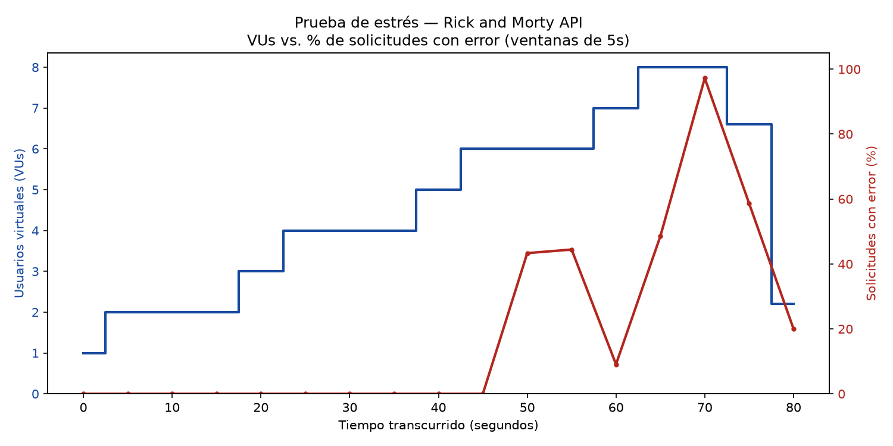
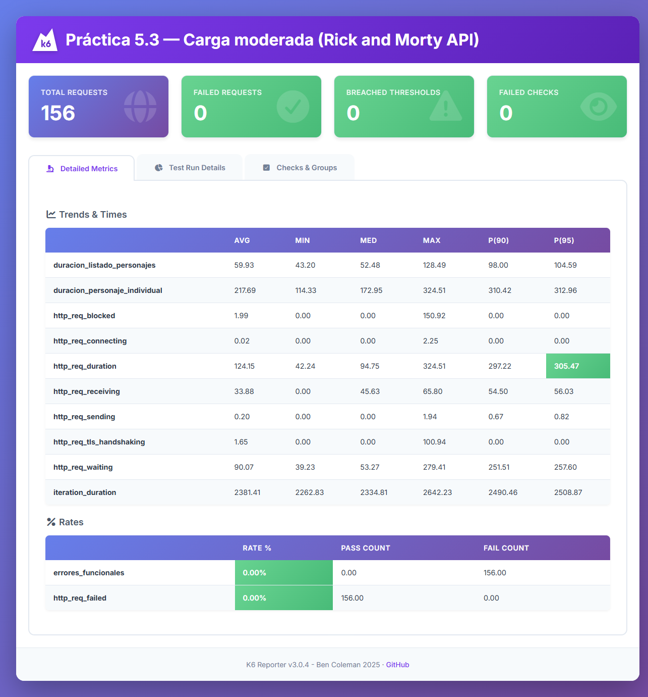

Resumen
Herramienta elegida: k6
(Grafana Labs), por su enfoque "performance test as code" en JavaScript, sus métricas
integradas (http_req_duration, http_req_failed, vus...)
y su reporte HTML (k6-reporter).
Plan de prueba
| Aplicación/API bajo prueba |
Rick and Morty API
— GET /api/character (listado paginado), GET /api/character/:id
(recurso individual), GET /api/character/999999 (caso negativo, debe dar 404)
|
|---|---|
| Prueba 1 — Carga moderada |
scripts/carga-moderada.js — ramping-vus: 0→2 VUs (10s), 2 VUs
sostenidos (15s), 2→3 VUs (10s), 3 VUs sostenidos (15s), 3→0 (10s). Pausa de 2s entre
iteraciones. Total ≈ 60s.
|
| Prueba 2 — Estrés / breakpoint |
scripts/prueba-estres.js — ramping-vus en escalones de 10s:
2 → 4 → 6 → 8 VUs y vuelta a 0. Sin pausas largas, para forzar concurrencia creciente
y encontrar el punto de quiebre. Total ≈ 90s.
|
Resultados — Carga moderada
Perfil de tráfico conservador (máx. 3 VUs), pensado para validar el comportamiento normal de la API.
| Métrica | Resultado |
|---|---|
Solicitudes totales (http_reqs) |
156 (≈2.5 req/s) |
| Checks superados | 260 / 260 (100%) |
http_req_failed |
0.00% |
http_req_duration — listado de personajes (avg / p95) |
59.9 ms / 104.6 ms |
http_req_duration — personaje individual (avg / p95) |
217.7 ms / 313.0 ms |
Umbrales (thresholds) definidos |
Todos aprobados (p95<800ms, p99<1500ms, error rate<1%) |
Reporte HTML completo (k6-reporter) · JSON del resumen · Salida de consola
Resultados — Prueba de estrés (breakpoint)
Antes de esta prueba, un script de diagnóstico reveló que la Rick and Morty API está
protegida por Cloudflare y responde HTTP 429 con el cuerpo
{"error code: 1015"} (rate limit) cuando detecta demasiadas solicitudes
concurrentes desde la misma IP. La prueba de estrés incrementa la concurrencia en
escalones para encontrar ese límite de forma controlada y medirlo.

| Ventana (5s) | VUs (prom.) | Solicitudes | Errores (≠200) | % error |
|---|---|---|---|---|
| t=0s | 1.0 | 5 | 0 | 0.0% |
| t=5s | 2.0 | 9 | 0 | 0.0% |
| t=10s | 2.0 | 10 | 0 | 0.0% |
| t=15s | 2.0 | 10 | 0 | 0.0% |
| t=20s | 3.0 | 14 | 0 | 0.0% |
| t=25s | 4.0 | 18 | 0 | 0.0% |
| t=30s | 4.0 | 20 | 0 | 0.0% |
| t=35s | 4.0 | 20 | 0 | 0.0% |
| t=40s | 5.0 | 23 | 0 | 0.0% |
| t=45s | 6.0 | 27 | 0 | 0.0% |
| t=50s | 6.0 | 30 | 13 | 43.3% |
| t=55s | 6.0 | 27 | 12 | 44.4% |
| t=60s | 7.0 | 33 | 3 | 9.1% |
| t=65s | 8.0 | 35 | 17 | 48.6% |
| t=70s | 8.0 | 36 | 35 | 97.2% |
| t=75s | 6.6 | 29 | 17 | 58.6% |
| t=80s | 2.2 | 10 | 2 | 20.0% |
Datos exactos calculados por reportes/generar-grafico-estres.py a partir del
NDJSON exportado por k6 (ventanas de 5 segundos).
Salida de consola completa · Datos crudos (NDJSON exportado por k6) · Script Python usado para generar el gráfico
Explicación de los resultados
Con una carga moderada (2–3 usuarios virtuales, con pausas entre solicitudes) la API respondió de forma consistente: 0% de errores, tiempos de respuesta bajos (p95 de ~60–310ms según el endpoint) y los tres umbrales de calidad definidos se cumplieron sin excepción. Esto demuestra que, dentro de un uso razonable, el servicio es estable.
Al incrementar deliberadamente la concurrencia en la prueba de estrés, el comportamiento
cambió de forma abrupta — no de manera gradual como ocurriría por saturación real del
servidor, sino con un salto brusco de 0% a ~40%+ de errores al cruzar aproximadamente
5–6 usuarios virtuales simultáneos. Esto es la firma típica de un rate limiter
(en este caso, de Cloudflare) y no de un cuello de botella de la aplicación: el servidor
no se "cae" ni se vuelve lento, simplemente empieza a rechazar solicitudes con
HTTP 429 para protegerse.
Hallazgo principal
La Rick and Morty API tolera de forma estable hasta ~4–5 solicitudes por segundo
sostenidas desde una misma IP; por encima de ese umbral, Cloudflare empieza a devolver
429 (error code 1015) con una cabecera Retry-After. Para un
consumidor real de esta API, la recomendación práctica sería implementar
reintentos con backoff respetando esa cabecera, y/o cachear resultados del
lado del cliente en vez de reconsultar el mismo recurso repetidamente.
Evidencia de ejecución

Cómo reproducir estas pruebas
git clone https://github.com/ecompute30/Lab_programacion3_INF5170.git cd Lab_programacion3_INF5170/P53_PruebasPerformance_k6 # Instalar k6: https://k6.io/docs/getting-started/installation/ k6 run scripts/carga-moderada.js k6 run --out json=reportes/prueba-estres-metricas.json scripts/prueba-estres.js # Regenerar el gráfico de la prueba de estrés (requiere matplotlib) pip install matplotlib python reportes/generar-grafico-estres.py